WEB HISTORY
Milestones

1910
Belgian information activist Paul Otlet and Henri La Fontaine founded TheMundaneum.
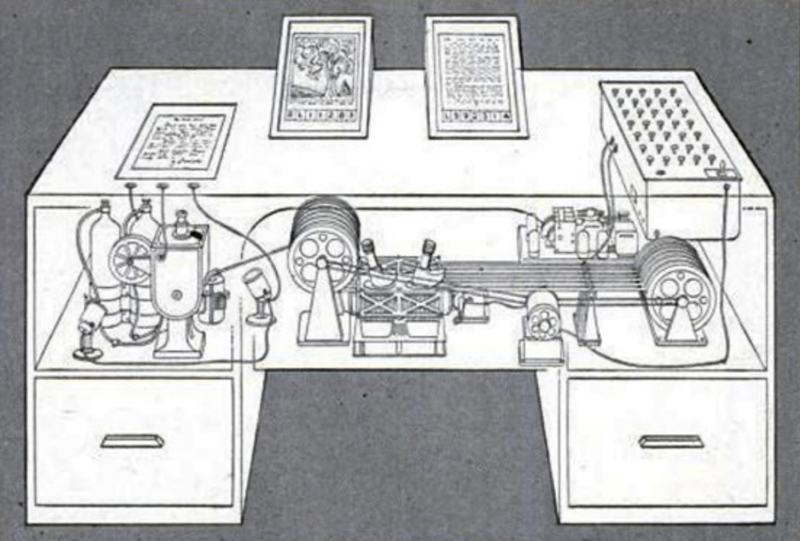
1945
The Memex, is a machine that stores records, books and documents. This machine was never built but it helped with the idea of the world wide web.

1960's
Project Xanadu was the first hypertext project by Ted Nelson, which you could share and read digital text.
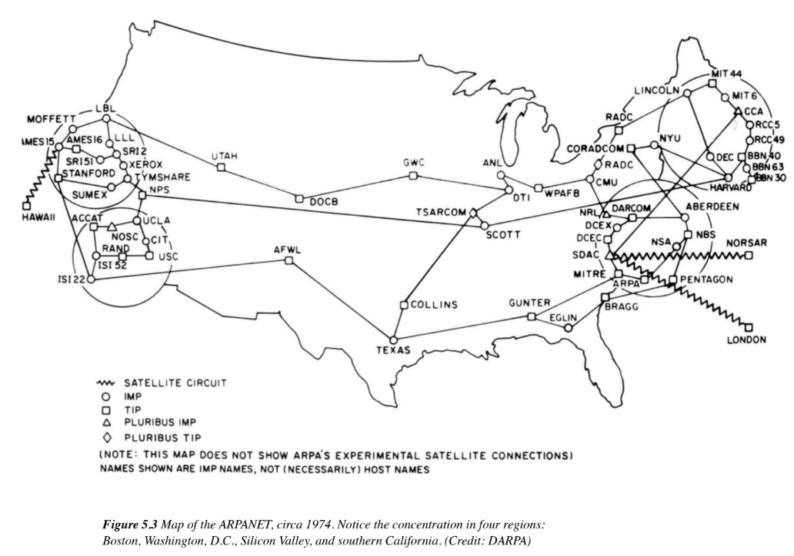
1960's
The first wide-area packet-switched network with distributed control was the ARPANET, Advanced Research Projects Agency Network, which would allow you to enable resource sharing between remote computers.
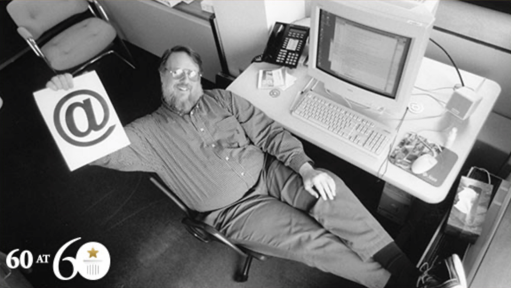
1971
An american programmer named Raymond Samuel Tomlinson invented the First Email program on the ARPANET system.
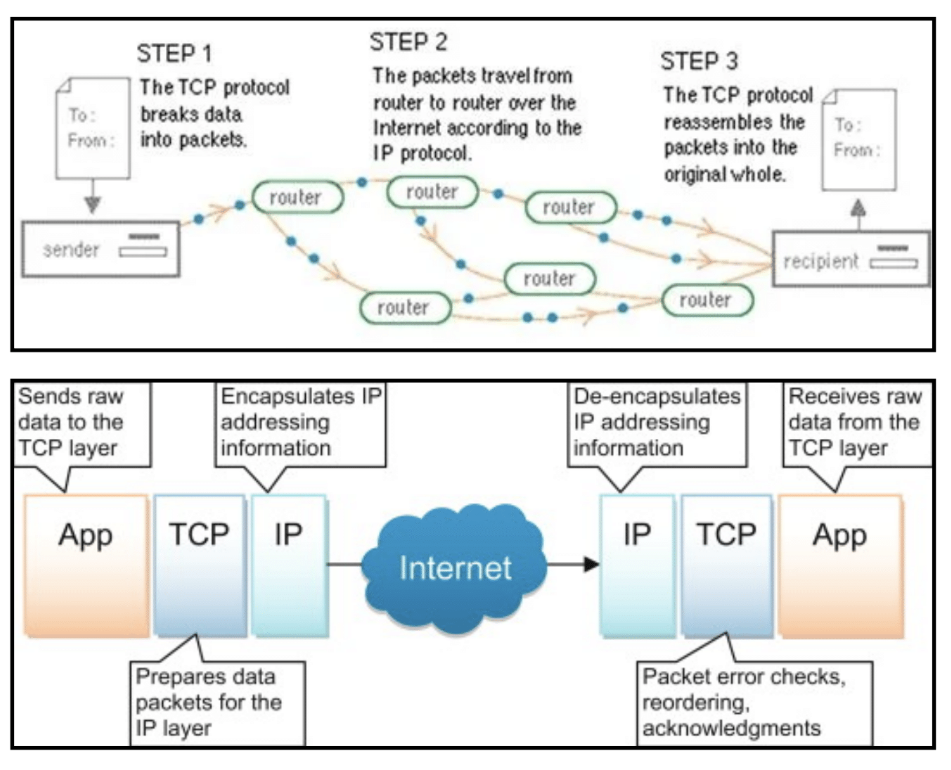
1983
The protocol responsible for addressing host interfaces is the Internetwork Protocol, which relays datagrams across network boundaries.
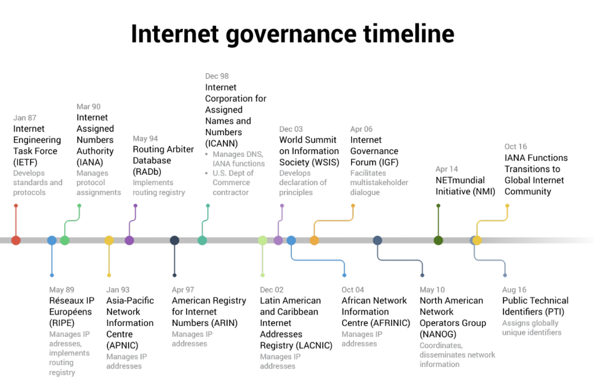
1983
The effort done by governments, the private sector, civil society, and technical actors, is called Governance of the Internet, which they develop and enforce the shared principles, norms, rules, and decision-making procedures that shape the evolution and use of the Internet.
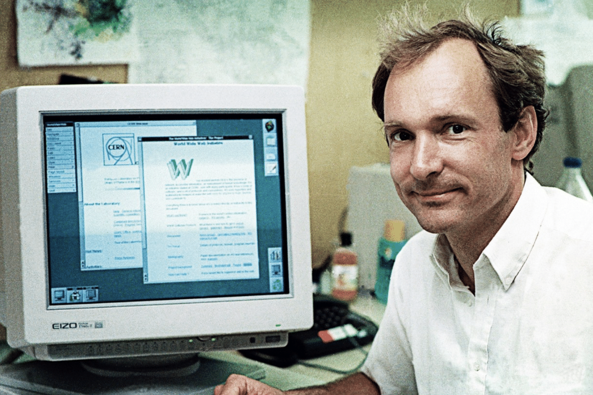
1989
The global information medium that users can access via computers connected to the Internet was introduced by the Invention of the World Wide Web, which fun fact sometimes is mistaken for the internet.
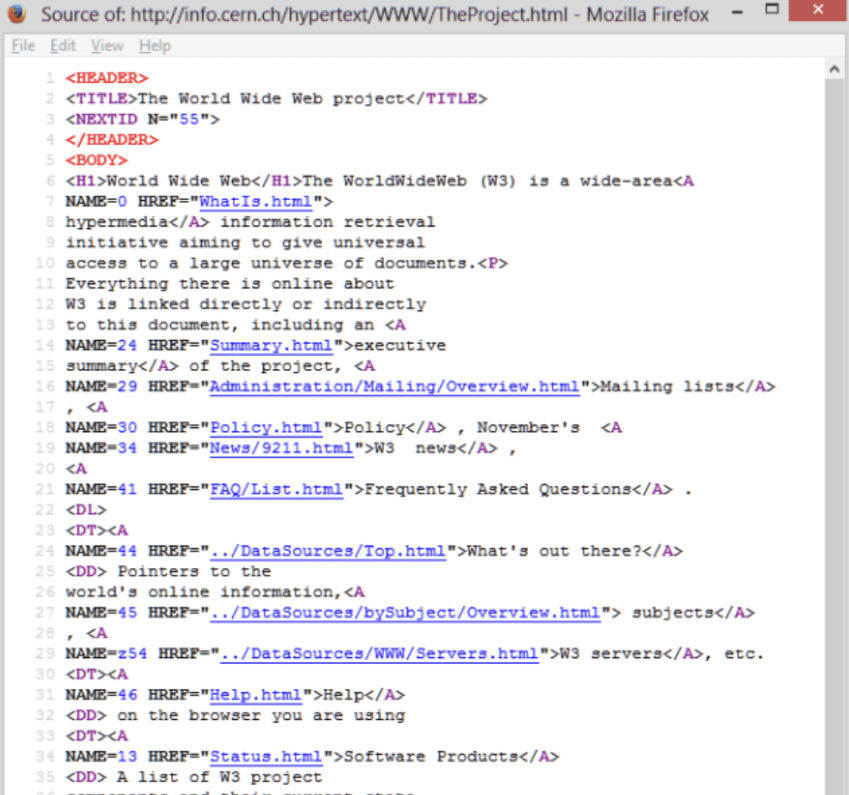
1990
The Foundations of a website, started with the world wide web using HTML.
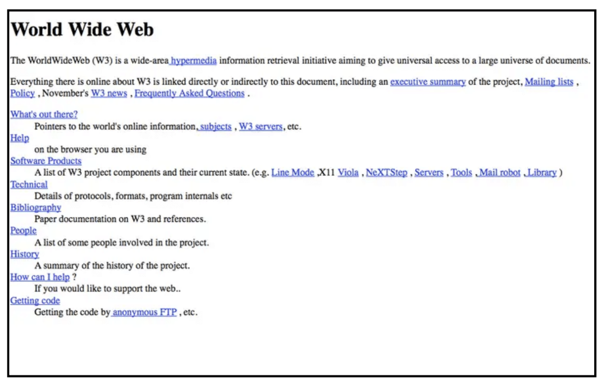
1991
The first website, which was used to explain how to use the world wide web, and also it uses a very similar layout to the cmd.
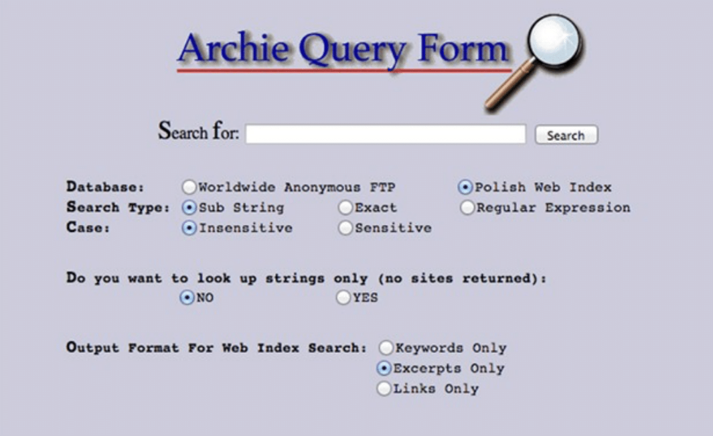
1990
The first search engine, Archie, which is just archive without the v, worked by downloading the files you could search into your computer and then search it from there, which is not like now that you can just search the stuff you need without downloading anything and the reason it worked that way is because the world wide web didn't exist yet.
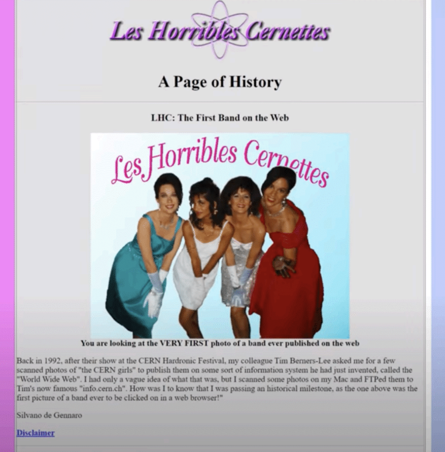
1992
Les Horribles Cernettes was the first photo on the Internet, which was done after a festival after one of the band's member collegue asked them if he could scan a photo of them and publish it in his information website, which was the "info.cern.ch.

1997
The creation of the wifi by an australian organization.
The creation of the wifi is one of the most significant creations in all history, since it allows access to the internet and which the internet can make you access to a whole broad of stuff. The wifi works by allowing nearby digital devices to exchange data by radio waves. It started with an Australian organization in 1989 working on a wireless LAN technology. Which then almost a decade later in 1997, the 1st protocol was released and it provided up to 2 Mbit/s link speeds. Which throughout the years the wifi has been improving a lot.
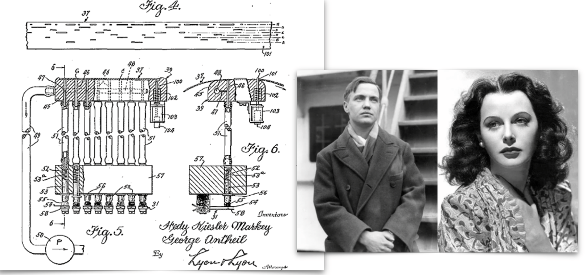